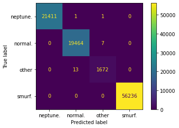

import pandas as pd
import matplotlib.pyplot as plt
import seaborn as sns
from sklearn.preprocessing import OneHotEncoder
from sklearn.model_selection import train_test_split
from sklearn.ensemble import RandomForestClassifier
from sklearn import metrics
---------------------------------------------------------------------------
ModuleNotFoundError Traceback (most recent call last)
/tmp/ipykernel_2216/3710154343.py in <module>
----> 1 import pandas as pd
2 import matplotlib.pyplot as plt
3 import seaborn as sns
4 from sklearn.preprocessing import OneHotEncoder
5 from sklearn.model_selection import train_test_split
ModuleNotFoundError: No module named 'pandas'
Import Network Security Dataset
dataset = pd.read_csv("dataset/kddcup.data_10_percent_corrected", header = None)
dataset.head()
| 0 | 1 | 2 | 3 | 4 | 5 | 6 | 7 | 8 | 9 | ... | 32 | 33 | 34 | 35 | 36 | 37 | 38 | 39 | 40 | 41 | |
|---|---|---|---|---|---|---|---|---|---|---|---|---|---|---|---|---|---|---|---|---|---|
| 0 | 0 | tcp | http | SF | 181 | 5450 | 0 | 0 | 0 | 0 | ... | 9 | 1.0 | 0.0 | 0.11 | 0.0 | 0.0 | 0.0 | 0.0 | 0.0 | normal. |
| 1 | 0 | tcp | http | SF | 239 | 486 | 0 | 0 | 0 | 0 | ... | 19 | 1.0 | 0.0 | 0.05 | 0.0 | 0.0 | 0.0 | 0.0 | 0.0 | normal. |
| 2 | 0 | tcp | http | SF | 235 | 1337 | 0 | 0 | 0 | 0 | ... | 29 | 1.0 | 0.0 | 0.03 | 0.0 | 0.0 | 0.0 | 0.0 | 0.0 | normal. |
| 3 | 0 | tcp | http | SF | 219 | 1337 | 0 | 0 | 0 | 0 | ... | 39 | 1.0 | 0.0 | 0.03 | 0.0 | 0.0 | 0.0 | 0.0 | 0.0 | normal. |
| 4 | 0 | tcp | http | SF | 217 | 2032 | 0 | 0 | 0 | 0 | ... | 49 | 1.0 | 0.0 | 0.02 | 0.0 | 0.0 | 0.0 | 0.0 | 0.0 | normal. |
5 rows × 42 columns
dataset.shape
(494021, 42)
dataset.describe()
| 0 | 4 | 5 | 6 | 7 | 8 | 9 | 10 | 11 | 12 | ... | 31 | 32 | 33 | 34 | 35 | 36 | 37 | 38 | 39 | 40 | |
|---|---|---|---|---|---|---|---|---|---|---|---|---|---|---|---|---|---|---|---|---|---|
| count | 494021.000000 | 4.940210e+05 | 4.940210e+05 | 494021.000000 | 494021.000000 | 494021.000000 | 494021.000000 | 494021.000000 | 494021.000000 | 494021.000000 | ... | 494021.000000 | 494021.000000 | 494021.000000 | 494021.000000 | 494021.000000 | 494021.000000 | 494021.000000 | 494021.000000 | 494021.000000 | 494021.000000 |
| mean | 47.979302 | 3.025610e+03 | 8.685324e+02 | 0.000045 | 0.006433 | 0.000014 | 0.034519 | 0.000152 | 0.148247 | 0.010212 | ... | 232.470778 | 188.665670 | 0.753780 | 0.030906 | 0.601935 | 0.006684 | 0.176754 | 0.176443 | 0.058118 | 0.057412 |
| std | 707.746472 | 9.882181e+05 | 3.304000e+04 | 0.006673 | 0.134805 | 0.005510 | 0.782103 | 0.015520 | 0.355345 | 1.798326 | ... | 64.745380 | 106.040437 | 0.410781 | 0.109259 | 0.481309 | 0.042133 | 0.380593 | 0.380919 | 0.230590 | 0.230140 |
| min | 0.000000 | 0.000000e+00 | 0.000000e+00 | 0.000000 | 0.000000 | 0.000000 | 0.000000 | 0.000000 | 0.000000 | 0.000000 | ... | 0.000000 | 0.000000 | 0.000000 | 0.000000 | 0.000000 | 0.000000 | 0.000000 | 0.000000 | 0.000000 | 0.000000 |
| 25% | 0.000000 | 4.500000e+01 | 0.000000e+00 | 0.000000 | 0.000000 | 0.000000 | 0.000000 | 0.000000 | 0.000000 | 0.000000 | ... | 255.000000 | 46.000000 | 0.410000 | 0.000000 | 0.000000 | 0.000000 | 0.000000 | 0.000000 | 0.000000 | 0.000000 |
| 50% | 0.000000 | 5.200000e+02 | 0.000000e+00 | 0.000000 | 0.000000 | 0.000000 | 0.000000 | 0.000000 | 0.000000 | 0.000000 | ... | 255.000000 | 255.000000 | 1.000000 | 0.000000 | 1.000000 | 0.000000 | 0.000000 | 0.000000 | 0.000000 | 0.000000 |
| 75% | 0.000000 | 1.032000e+03 | 0.000000e+00 | 0.000000 | 0.000000 | 0.000000 | 0.000000 | 0.000000 | 0.000000 | 0.000000 | ... | 255.000000 | 255.000000 | 1.000000 | 0.040000 | 1.000000 | 0.000000 | 0.000000 | 0.000000 | 0.000000 | 0.000000 |
| max | 58329.000000 | 6.933756e+08 | 5.155468e+06 | 1.000000 | 3.000000 | 3.000000 | 30.000000 | 5.000000 | 1.000000 | 884.000000 | ... | 255.000000 | 255.000000 | 1.000000 | 1.000000 | 1.000000 | 1.000000 | 1.000000 | 1.000000 | 1.000000 | 1.000000 |
8 rows × 38 columns
#Missing values in the data
column_null = [col for col in dataset.columns if dataset[col].isnull().any()]
dataset[column_null].isnull().sum()
#There are no missing data in the dataset
Series([], dtype: float64)
#Create column names
feature_names = pd.read_csv("KDD_Feature_Names.txt", header = None)
name_list = []
length = range(len(feature_names))
for index in length:
name = feature_names.iloc[index]
name = str(name).split(": ")[0]
name = name.split(" ")[1]
name_list.append(name)
name_list.append("attack type")
name_list
dataset.columns = name_list
#New Column Names
dataset.columns
Index(['duration', 'protocol_type', 'service', 'flag', 'src_bytes',
'dst_bytes', 'land', 'wrong_fragment', 'urgent', 'hot',
'num_failed_logins', 'logged_in', 'num_compromised', 'root_shell',
'su_attempted', 'num_root', 'num_file_creations', 'num_shells',
'num_access_files', 'num_outbound_cmds', 'is_host_login',
'is_guest_login', 'count', 'srv_count', 'serror_rate',
'srv_serror_rate', 'rerror_rate', 'srv_rerror_rate', 'same_srv_rate',
'diff_srv_rate', 'srv_diff_host_rate', 'dst_host_count',
'dst_host_srv_count', 'dst_host_same_srv_rate',
'dst_host_diff_srv_rate', 'dst_host_same_src_port_rate',
'dst_host_srv_diff_host_rate', 'dst_host_serror_rate',
'dst_host_srv_serror_rate', 'dst_host_rerror_rate',
'dst_host_srv_rerror_rate', 'attack type'],
dtype='object')
#The frequency of normal and attacks
sns.catplot(data = dataset, y = "attack type", kind = "count")
plt.ylabel("Attack Types")
plt.show()
dataset["attack type"].value_counts()
smurf. 280790
neptune. 107201
normal. 97278
back. 2203
satan. 1589
ipsweep. 1247
portsweep. 1040
warezclient. 1020
teardrop. 979
pod. 264
nmap. 231
guess_passwd. 53
buffer_overflow. 30
land. 21
warezmaster. 20
imap. 12
rootkit. 10
loadmodule. 9
ftp_write. 8
multihop. 7
phf. 4
perl. 3
spy. 2
Name: attack type, dtype: int64
#Place all the classes that have less counts than normal into one class "Other"
classes_high_count = ["smurf.", "neptune.", "normal."]
other_classes = list(set(dataset["attack type"]) - set(classes_high_count))
dataset["attack type"] = dataset["attack type"].replace(other_classes, "other")
#The frequency of normal and attacks
sns.catplot(data = dataset, y = "attack type", kind = "count")
plt.ylabel("Attack Types")
plt.show()
#Pie Chart
x = dataset["attack type"].value_counts()
attack_type_labels = dataset["attack type"].value_counts().index
attack_type_explode = [0, 0, 0.2, 0,]
plt.pie(x, labels = attack_type_labels, explode = attack_type_explode, shadow = True)
plt.show()
dataset["attack type"].value_counts()
smurf. 280790
neptune. 107201
normal. 97278
other 8752
Name: attack type, dtype: int64
#Correlation Heatmap of the numerical features
new_dataset = dataset.copy()
new_dataset = new_dataset.drop(["num_outbound_cmds", "is_host_login"], axis = 1)
corr_matrix = new_dataset.corr()
sns.heatmap(corr_matrix)
plt.plot()
[]
#Separate Features and Target variable
X = dataset[dataset.columns[0:-1]]
y = dataset["attack type"]
#Get numerical feature names
numerical_variables = X.select_dtypes(exclude=['object'])
#Get categorical feature names
categorical_variables = [col for col in X.columns if X[col].dtype == "object"]
categorical_variables
['protocol_type', 'service', 'flag']
#The number unique values in each categorical feature
object_nunique = list(map(lambda col: X[col].nunique(), categorical_variables))
d = dict(zip(categorical_variables, object_nunique))
#Print number of unique entries by column, in ascending order
sorted(d.items(), key=lambda x: x[1])
[('protocol_type', 3), ('flag', 11), ('service', 66)]
#Remove categorical variables that have more than 10 unique values (Cardinality) in train dataset
low_cardinality_cols = [col for col in categorical_variables if X[col].nunique() < 10] #These are the features we will keep
#Features that will be dropped from the dataset
high_cardinality_cols = list(set(categorical_variables)-set(low_cardinality_cols))
#Service feature will be dropped from the dataset
#These are the features we will keep
low_cardinality_cols
['protocol_type']
#Apply OneHotEncoder function
OH_encoder = OneHotEncoder(handle_unknown="ignore", sparse=False)
OH_imputed_categorical_variables = pd.DataFrame(OH_encoder.fit_transform(X[low_cardinality_cols]))
#OneHotEncoder function removes index. Give it back
OH_imputed_categorical_variables.index = X.index
#Combine both numerical and categorical features
X = pd.concat([numerical_variables, OH_imputed_categorical_variables], axis=1)
X.head()
| duration | src_bytes | dst_bytes | land | wrong_fragment | urgent | hot | num_failed_logins | logged_in | num_compromised | ... | dst_host_diff_srv_rate | dst_host_same_src_port_rate | dst_host_srv_diff_host_rate | dst_host_serror_rate | dst_host_srv_serror_rate | dst_host_rerror_rate | dst_host_srv_rerror_rate | 0 | 1 | 2 | |
|---|---|---|---|---|---|---|---|---|---|---|---|---|---|---|---|---|---|---|---|---|---|
| 0 | 0 | 181 | 5450 | 0 | 0 | 0 | 0 | 0 | 1 | 0 | ... | 0.0 | 0.11 | 0.0 | 0.0 | 0.0 | 0.0 | 0.0 | 0.0 | 1.0 | 0.0 |
| 1 | 0 | 239 | 486 | 0 | 0 | 0 | 0 | 0 | 1 | 0 | ... | 0.0 | 0.05 | 0.0 | 0.0 | 0.0 | 0.0 | 0.0 | 0.0 | 1.0 | 0.0 |
| 2 | 0 | 235 | 1337 | 0 | 0 | 0 | 0 | 0 | 1 | 0 | ... | 0.0 | 0.03 | 0.0 | 0.0 | 0.0 | 0.0 | 0.0 | 0.0 | 1.0 | 0.0 |
| 3 | 0 | 219 | 1337 | 0 | 0 | 0 | 0 | 0 | 1 | 0 | ... | 0.0 | 0.03 | 0.0 | 0.0 | 0.0 | 0.0 | 0.0 | 0.0 | 1.0 | 0.0 |
| 4 | 0 | 217 | 2032 | 0 | 0 | 0 | 0 | 0 | 1 | 0 | ... | 0.0 | 0.02 | 0.0 | 0.0 | 0.0 | 0.0 | 0.0 | 0.0 | 1.0 | 0.0 |
5 rows × 41 columns
#Train and split data
X_train, X_test, y_train, y_test = train_test_split(X, y, test_size = 0.2, random_state = 0)
#Train the Random Forest model
rf_model = RandomForestClassifier(n_estimators = 100, random_state = 0)
rf_model.fit(X_train, y_train)
#Create predictions
y_pred = rf_model.predict(X_test)
#Evaluate the model
accuracy = metrics.accuracy_score(y_test, y_pred) * 100
accuracy
99.97773392034816
#Confusion Matrix
plotcm = metrics.plot_confusion_matrix(rf_model, X_test, y_test)
plt.show()
